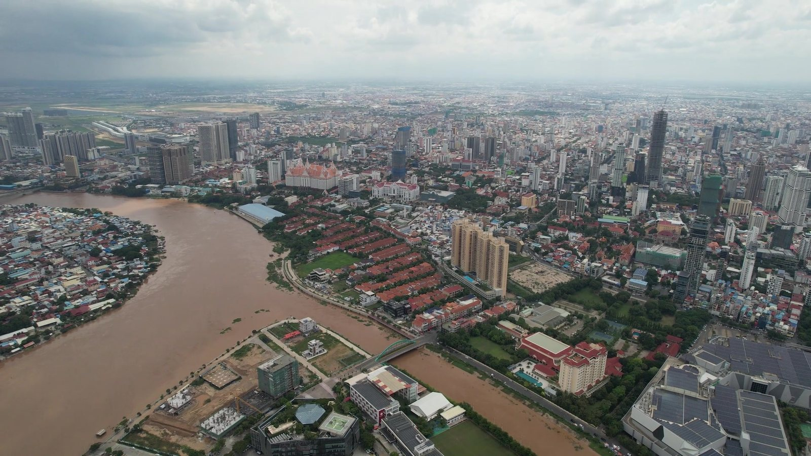
호치민을 위에서 내려다보면 모양이 조금 특이하다. 강 서쪽은 오래된 시가지가 빽빽하고, 강이 크게 휘어 도는 건너편은 아직 초록색 빈 땅이 넓다. 같은 도시인데 강 하나를 사이에 두고 나이가 이렇게 다르다. 이 도시는 어떤 순서로 자라서 지금의 모양이 됐을까?
1. 강이 먼저였다
호치민의 뼈대는 사이공강과 그 지류인 운하들이다. 위성사진을 보면 사이공강이 도심 동쪽에서 크게 휘어 돌고, 서쪽 시가지 사이로 운하가 구불구불 지나간다. 도로보다 물길이 먼저 있었고, 도시는 그 물길을 따라 들어섰다.
이곳은 원래 크메르 사람들이 프레이노코르(Prey Nokor)라고 부르던 마을이었다. 1620년대부터 북쪽 전쟁을 피해 내려온 베트남 사람들이 정착하기 시작했고, 1698년 응우옌 군주(chúa Nguyễn)가 보낸 장수 응우옌흐우까인(Nguyễn Hữu Cảnh)이 이곳에 자딘(Gia Định)부를 세웠다. 호치민은 이 1698년을 도시가 시작된 해로 본다.
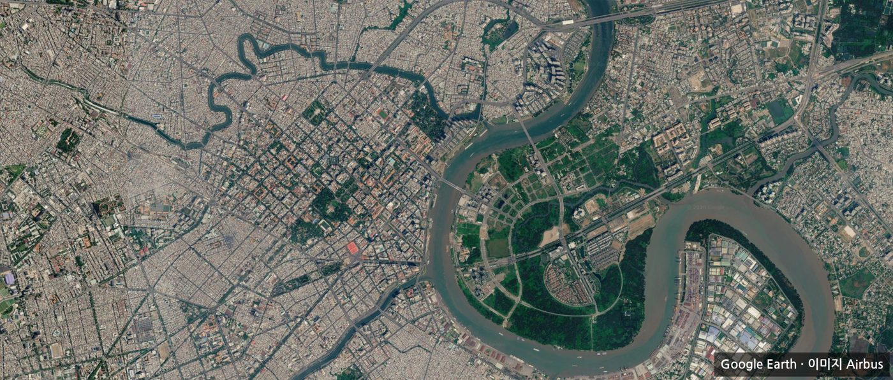
2. 프랑스가 그은 격자
도시의 모양을 크게 바꾼 것은 프랑스였다. 1859년 프랑스군이 자딘성을 무너뜨렸고, 사이공은 식민지 코친차이나의 수도가 됐다. 전투가 이어지는 동안 4만 명 정도이던 주민은 8,000명까지 줄었다.
그런데 1862년, 프랑스 공병 장교 폴 코팽(Paul Coffyn)은 이 작은 도시에 '50만 명이 사는 도시' 계획을 그렸다. 실제 인구의 수십 배를 내다본 계획이었다. 이후 강변을 따라 반듯한 격자 도로가 깔렸고, 넓은 가로수길과 공원, 관청과 시장이 그 위에 자리 잡았다.
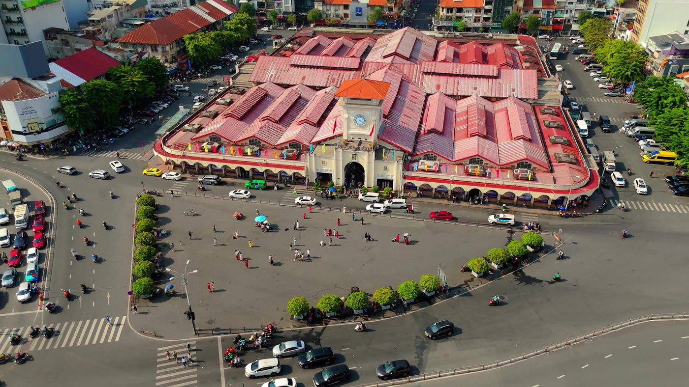
지금 호치민의 중심 업무지구가 바로 이 격자 위에 있다. 위에서 비스듬히 보면 강변에서 안쪽으로 뻗은 직선 도로와 블록이 지금도 또렷하다.
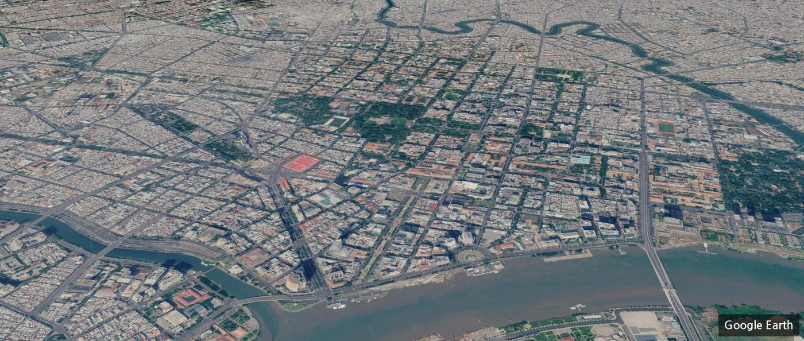
3. 중심이 하나 더 있었다, 쩌런
호치민에는 중심이 하나 더 있었다. 서쪽의 쩌런(Chợ Lớn)이다. 1770년대 후반 중국계 이주민들이 세운 상업 도시로, 쌀 무역의 중심이었다. 1879년 별도의 시가 됐을 때 쩌런은 사이공에서 11km 떨어져 있었다.
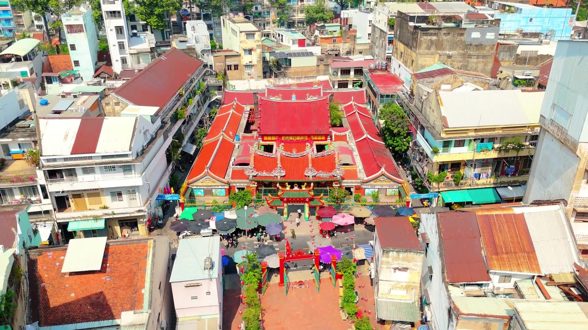
두 도시가 각자 커지면서 경계가 맞닿았고, 1931년 4월 27일 사이공과 쩌런은 '사이공–쩌런'이라는 하나의 행정구역으로 묶였다. 쩌런이라는 이름은 1956년 공식 명칭에서 빠졌지만, 옛 5군·6군 일대는 지금도 사원과 도매시장이 모여 사이공과 다른 결을 지닌다.
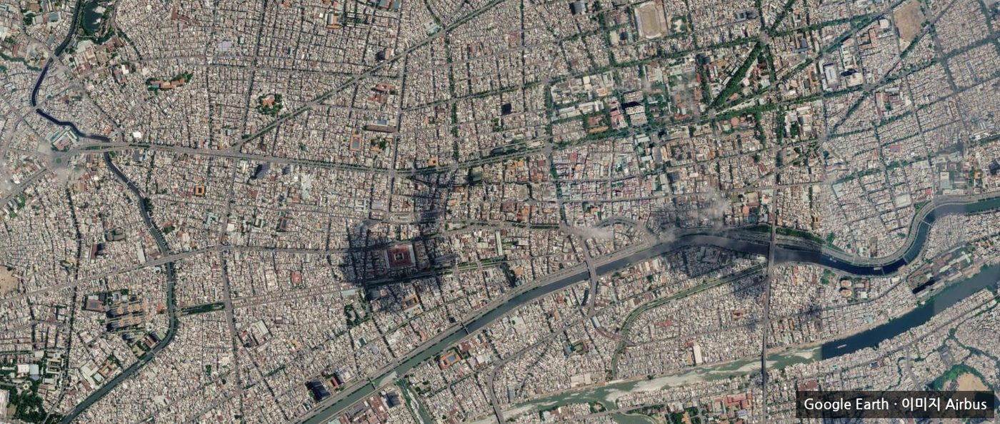
4. 사이공에서 호치민으로
도시는 빠르게 불었다. 1930년 약 25만 6,000명이던 사이공 인구는 1950년 약 117만 9,000명이 됐다. 1976년 7월 2일, 사이공은 주변 자딘성과 합쳐져 호치민시라는 새 이름을 얻었다.
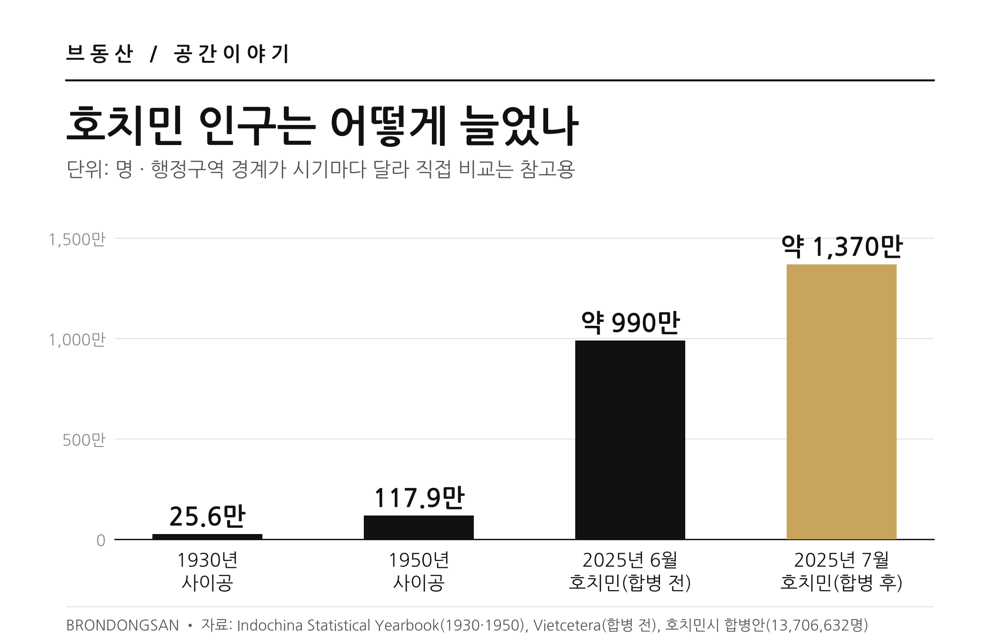
5. 강 건너로 넘어간 도시
강 서쪽이 가득 차자 도시는 강 너머 늪지로 눈을 돌렸다. 첫 번째는 남쪽이었다. 1993년 대만 CT&D 그룹과 호치민시가 합작해 푸미흥(Phú Mỹ Hưng) 개발회사를 세웠고, 길도 없던 늪지에 응우옌반린 대로를 먼저 내고 그 양쪽에 계획도시를 만들었다. 운하가 감싼 블록 안에 도로와 주거 단지가 반듯하게 나뉘어 있다. 지금은 외국인 주민이 많은 동네가 됐다.
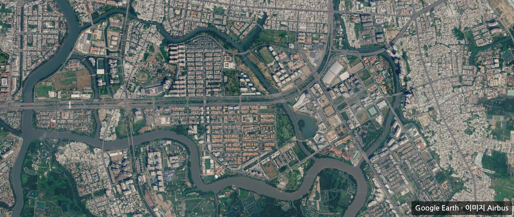
두 번째는 동쪽, 옛 도심 바로 건너편의 투티엠(Thủ Thiêm) 반도다. 1996년 정부가 신도시 계획을 승인했고, 2003년 국제 공모로 미국 사사키(Sasaki)의 마스터플랜이 뽑혔다. 하지만 토지 보상 분쟁 등으로 개발은 아주 느렸고, 계획 승인 30년이 지난 지금도 빈 땅이 많다.
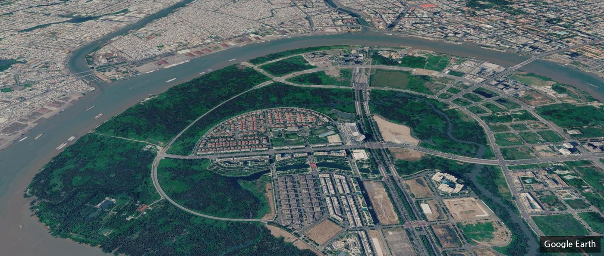
강을 건너는 길은 하나씩 늘었다. 2008년 투티엠 다리가 놓였고, 강 밑으로 터널이 뚫렸으며, 2022년에는 옛 1군과 투티엠을 바로 잇는 바손 다리가 열렸다. 2021년 1월에는 2군·9군·투득군을 합친 투득시(211.56㎢, 101만 명)가 생겼다. 호치민시 안에 또 하나의 시를 둔 첫 시도였다.
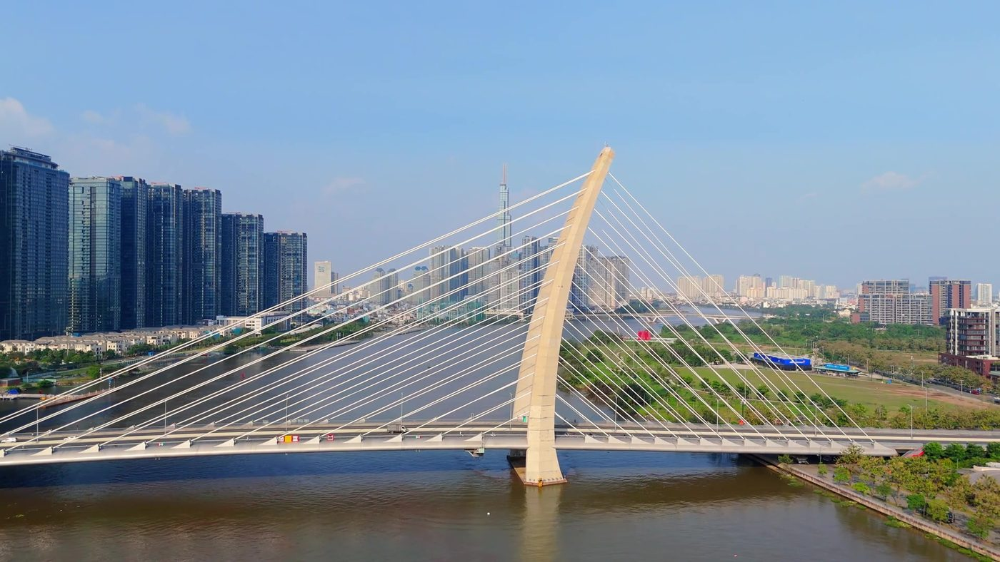
6. 2024~2025년, 다시 그려진 지도
2024년 12월 22일, 호치민 첫 도시철도인 메트로 1호선이 개통했다. 옛 도심 벤탄역에서 동쪽 수오이띠엔까지 19.7km, 14개 역을 29분에 달린다. 강 건너 동쪽으로 커지던 도시에 처음으로 철도 축이 생긴 셈이다.
그리고 2025년 7월 1일, 호치민은 빈즈엉성·바리아붕따우성과 합쳐졌다. 면적은 6,772.65㎢(서울의 약 11배), 합병안 기준 인구는 1,370만 명이다. 같은 날 전국에서 구(군) 단위 행정구역이 없어지면서 '1군', '2군' 같은 이름은 공식적으로 사라졌고, 투득시도 문을 닫았다. 지금 호치민은 동(phường) 113곳, 사(xã) 54곳, 꼰다오 특구 1곳으로 이뤄진다.
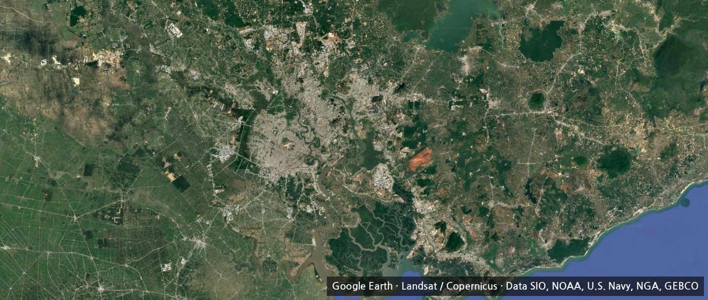
강 양쪽은 다시 하나의 계획으로 묶이고 있다. 2025년 9월 1일 시행된 국제금융센터 결의(222/2025/QH15)에 따라, 호치민 국제금융센터는 사이공동·벤탄동(옛 1군)과 강 건너 투티엠 일대를 아우르는 구역으로 계획됐다. 300년 전 강가 마을에서 시작한 도시가 이제 강을 가운데 두고 중심을 다시 그리고 있다.
7. 정리 — 지도를 볼 때 알아두면 좋은 것
| 연도 | 일어난 일 | 도시 모양으로 보면 |
|---|---|---|
| 1698 | 자딘부 설치 | 강가 정착지에서 출발 |
| 1862 | 코팽의 50만 명 도시 계획 | 강변 격자 도심의 시작 |
| 1931 | 사이공·쩌런 통합 | 두 개의 중심이 한 도시로 |
| 1976 | 호치민시로 개칭 | 자딘성과 합쳐 도시 확대 |
| 1993·1996 | 푸미흥 개발, 투티엠 계획 승인 | 강 건너 남쪽·동쪽으로 |
| 2024 | 메트로 1호선 개통 | 동쪽으로 철도 축 |
| 2025 | 빈즈엉·바리아붕따우 합병, 구 폐지 | 항구·공단까지 한 도시권 |
호치민 부동산 정보를 볼 때는 이름에 주의할 필요가 있다. 사람들은 여전히 '2군 타오디엔', '7군 푸미흥'처럼 옛 구 이름을 쓰지만, 2025년 7월부터 공식 주소는 새 동 이름을 쓴다. 예를 들어 타오디엔과 투티엠은 지금 안카인동(An Khánh)에 속한다. 매물 자료나 계약서의 주소가 옛 이름과 다르더라도 같은 곳일 수 있다.
정리하면 호치민은 강을 따라 서쪽에서 먼저 자랐고, 강 건너 남쪽과 동쪽으로 넘어갔으며, 이제 주변 지역까지 품은 큰 도시권이 됐다. 지도를 처음 볼 때 강을 먼저 따라가 보면 어느 동네가 언제 생겼는지 대략 보인다.
이 글은 브동산 유튜브 '도시이야기 1 · 호치민' 영상과 함께 만들었다.
참고한 자료
Wikipedia · Ho Chi Minh City ↗ · Wikipedia · Names of Ho Chi Minh City ↗ · PBS · Colonial Saigon ↗ · Historic Vietnam · Coffyn 1862 plan ↗ · Wikipedia · Chợ Lớn ↗ · Saigoneer · Cholon ↗ · Hitotsubashi IER · Saigon population ↗ · Phu My Hung · About ↗ · Tuoi Tre · Thu Thiem(2026.1) ↗ · Future Southeast Asia · Thu Thiem ↗ · Tuoi Tre News · 투티엠 토지 보상 분쟁(2018) ↗ · LawNet · 투득시 설립 결의 1111 ↗ · JICA · 메트로 1호선 개통(2024.12) ↗ · VnExpress · 19.7km·14개 역 ↗ · The Investor · 29분 ↗ · Lao Dong · 합병 후 면적·인구 ↗ · VietNamNet · 168개 동·사·특구 ↗ · Vietcetera · 합병 후 호치민 가이드 ↗ · Đại biểu Nhân dân · 국제금융센터 ↗
사진·영상: Google Earth(위성·3D 지도, 화면 하단 출처 표기 유지), Pexels(Pexels License).